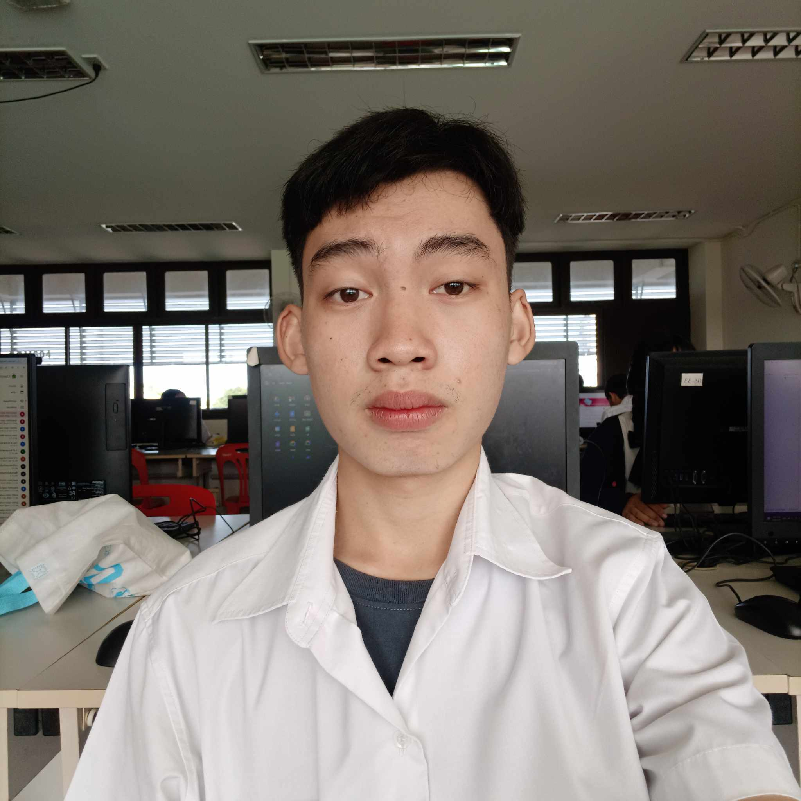

Thai-Austrian technical college
วิทยาลัยเทคนิคสัตหีบ

ข้อมูลส่วนตัว
ชื่อ นายกฤษณะ ภูสิงห์ทอง
ชื่อเล่น เหนือ
วันเกิด 2 พฤศจิกายน พ.ศ.2550
อายุ 17
ที่อยู่ 177/71 ตำบลบึง อำเภอศรีราชา จังหวัดชลบุรี 20230
ข้อมูลระดับการศึกษา
ชั้นอนุบาล 1 - 3 ที่ โรงเรียนเทศบาลแหลมฉบัง 1
ชั้นประถม 1 - 6 ที่ โรงเรียนเทศบาลแหลมฉบัง 1
ชั้นมัธยมต้น 1 - 3 ที่ โรงเรียนเทศบาลแหลมฉบัง 3
ระดับ ปวช. 1 - 2 ที่ วิทยาลัยเทคนิคสัตหีบ(กำลังศึกษา)
งานอดิเรก
1. ดูหนัง
2. ฟังเพลง
3. เล่นเกม
4. อ่านหนังสือการ์ตูน
5. อ่านนิยาย
6. ออกกำลังกาย
แรงบันดาลใจ
ส่วนตัวเป็นคนที่ชื่นชอบเรื่องของคอมพิวเตอร์และปัญญาประดิษฐ์มาตั้งแต่ตอนเด็ก
แต่แรงบรรดาลใจจริงๆอาจจะเป็นเพราะตอน ม.2 ช่วงที่โควิดกำลังระบาด
ผมได้มีโอกาศไปดูอนิเมชั่นเรื่อง plastic memories ที่ในเรื่องจะนำเสนอแนวคิดที่ว่า
มนุษย์และหุ่นยนต์สามารถใช้ชีวิตร่วมกันได้ โดยไม่มีความแตกต่างกัน
ทั้งเรื่องของรูปร่างและมีความคิดที่เหมือนกับมนุษย์แทบทุกอย่าง
ในตอนนั้นเองผมจึงเริ่มที่จะสนใจในเรื่องของเทคโนโลยีปัญญาประดิษฐ์ขึ้นมา
บวกกับช่วงนั้นเป็นช่วง กำลังจะขึ้น ม.3 ที่เพื่อนทุกคนเริ่มคิดกันแล้วว่าจะไปเรียนต่อสายไหน
ผมก็ลังเลอยู่ว่า จะทำตามความฝันที่มีตั้งแต่เด็กนั้นคือการเป็นเภสัชกร
หรือจะมาเลือกสิ่งที่เราสนใจที่สุดในตอนนี้ แต่ความลังเลก็มาจบที่การทำงานนี้ในตอนนี้
และในอนาคต จะไปศึกษาต่อในเรื่องของเทคโนโลยีปัญญาประดิษฐ์
ผลงาน
เคยชนะการแข่งขันจรวดขวดน้ำตอน ป.4
เคยเข้าร่วมอบรมการพูดตอน ม.3
ได้รับรางวัล เหรียญทองชนะเลิศกีฬาว่ายน้ำ ตอน ป.1 และ ป.2
แข่งขันวิชาการวิทยาศาสตร์ได้ที่ 3 ตอน ป.5